| 日付 | 2010年11月27日（土） |
|---|---|
| メンバー | 家族（妻） |
| アクセス | 電車 |
天気が良いので後楽園に遊びに行くことにする。
まずは展望台のある文京区役所に行ってみる。
ビルの1回には「文」と書かれた謎のキャラクターが…。文京区の「文」だろうか？
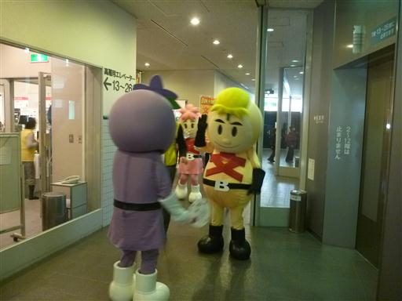
東京の真中にあるビルのため、展望台からは東京の街が一望できる。
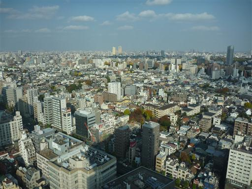
建設中のスカイツリーは意外な近さだ。
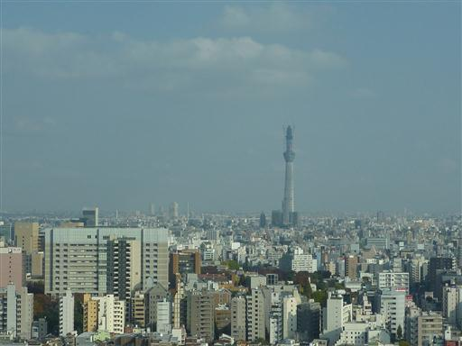
眼下の公園。紅葉が美しい。
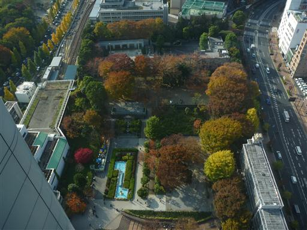
外に出て東京ドーム前にやってくる。
関東に引っ越してから、東京ドームに来るのはこれが初めてだ。
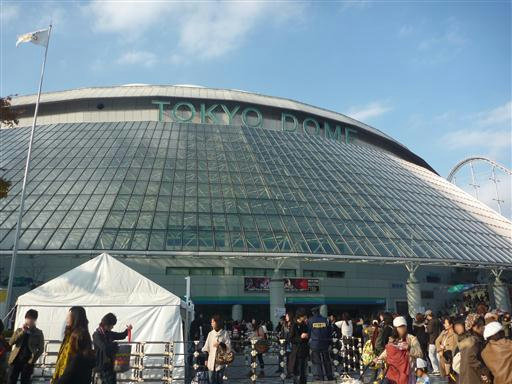
何やらすごい人だかりができている。聞いてみると今日はUVERworldのツアーがドームであるらしい。
UVERworldという歌手（バンド）は名前くらいは知っていたが、こんなに人気だとは知らなかった。
家に帰って調べてみると、なんと滋賀県出身のバンドだった。
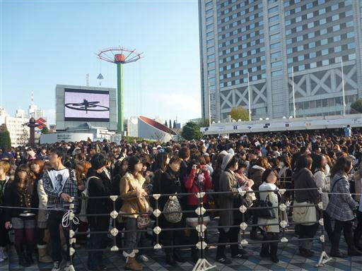
喧騒を離れ、小石川後楽園に向かう。後楽園にある庭園だ。
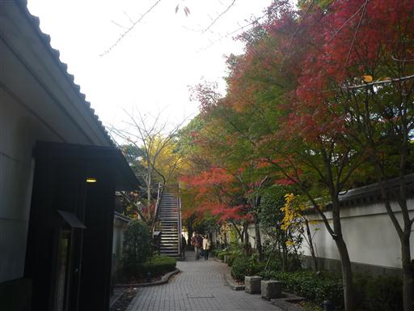
入口に到着。東京ドーム前とは年齢層がかなり違うが、それでもそれなりに賑わっている。
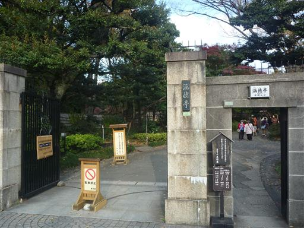
公園の規模は小さいが、鬱蒼とした樹林におおわれている。
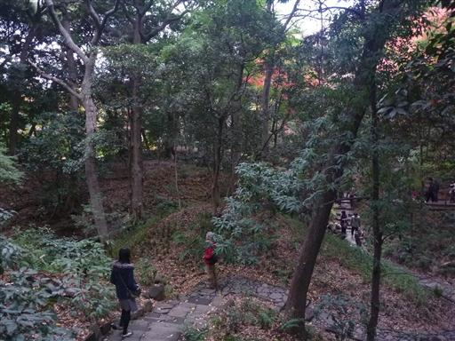
落ちたイチョウの葉が積もっている。
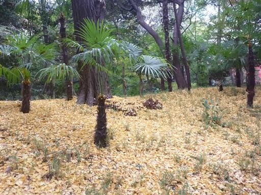
庭園の背後に東京ドームが見える。何やら不思議な光景だ。
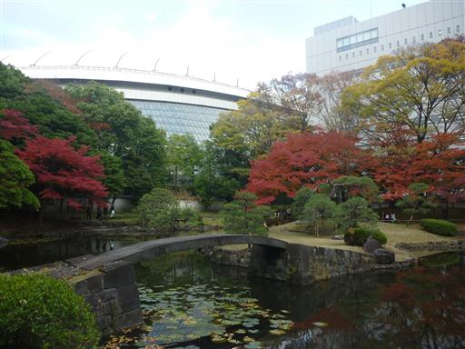
紅葉は今が盛りだ。
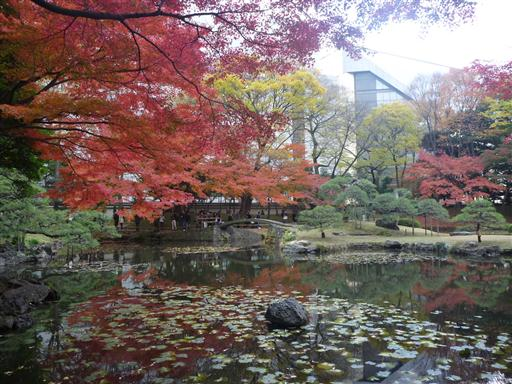
多くの人がカメラを構えている。
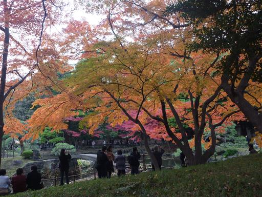
水面ぎりぎりを這う木。手入れして、わざとこのような形に育てたのだろうか？
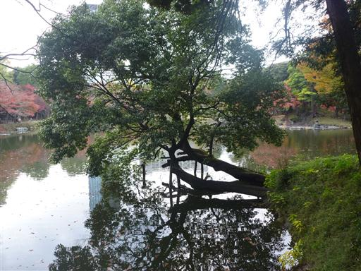
傾斜45度を超える急な階段。上り下りしたかったが封鎖されていた。
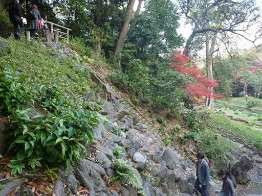
赤いモミジの葉が覆いかぶさって、木の幹が赤く見えている。
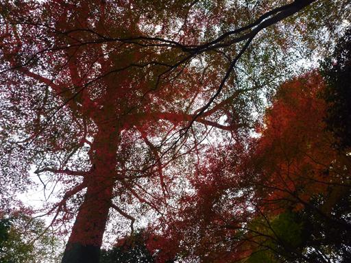
ハスの花。こちらはもう終わりだ。
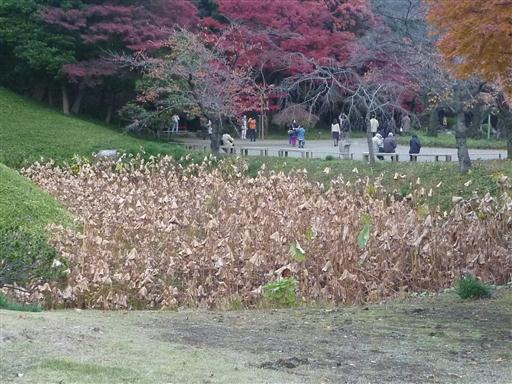
公園を出て後楽園遊園地に向かう。大きなウルトラマンが立っている。
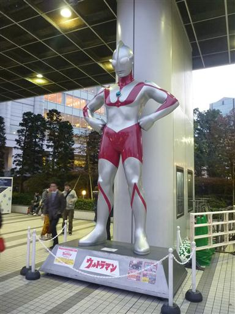
日が暮れてきた。辺りにいた大勢の人達はもうみんなドームの中に入ったようだ。
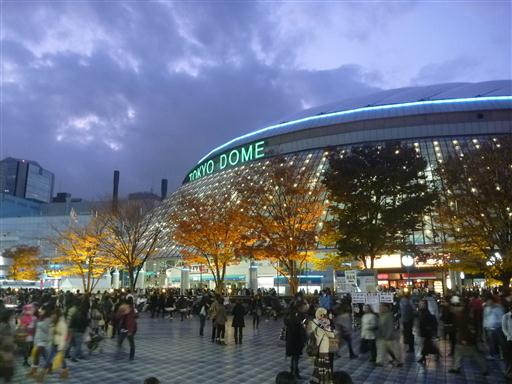
付近のトイレはどこも大混雑で、なんと入場制限を行っている。
どこに行っても人が多い。10～20代の若い人が多い。
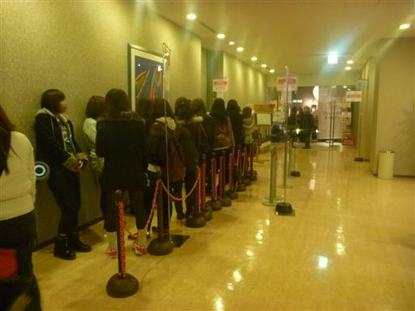
クリスマスが近いからか、あちこちでイルミネーションが見られる。
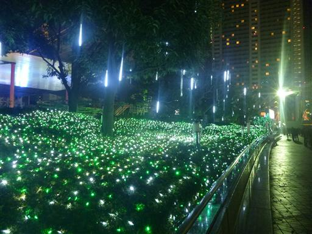
メリーゴーランド。
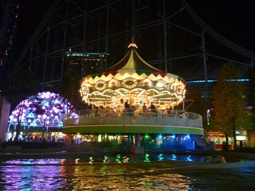
カエルのお尻から鳥の首が出ている…。何やら謎なメリーゴーランドだ。
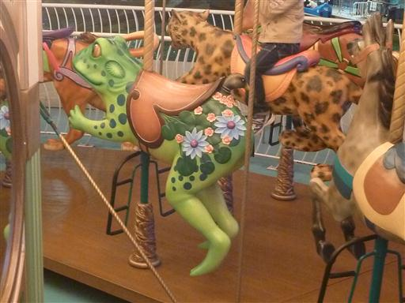
地上60mまで上がった後、ふわりと降りてくる。
体が固定される訳ではないため、結構高度感がある。
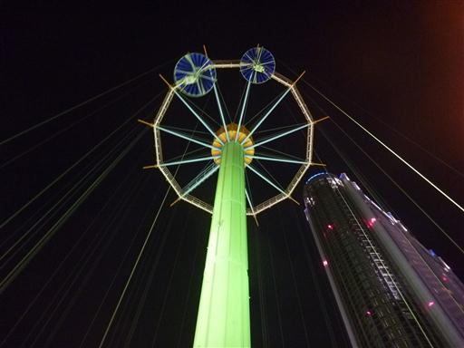
上から見た後楽園周辺の夜景。
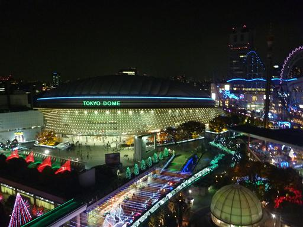
O型観覧車とジェットコースター。
あまり速い乗り物は一緒に乗れなかったが、久々の街遊びを楽しめた。
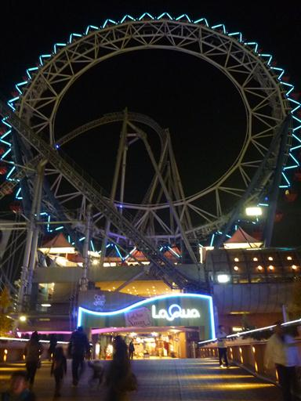